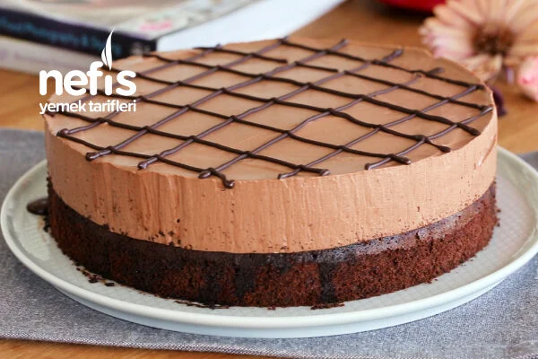

Despacito Pastasi
Kek icin
- 3 Yumurta
- 1/2 su bardagi seker
- 1 tatli kasigi kabartma tozu
- 1 paket vanilya
- 2.5 yemek kasigi kako
Kahveli Surubu icin
- 1 su bardagi süt
- 1 yemek kasigi kakao
- 2 yemek kasigi instant kahve
Cikolatali Mus icin
- 100g bitter cikolata
- 50g sütlü cikolata
- 400ml sivi krema
- 1 yemek kasigi pudra sekeri
Hazirlanisi
- Pastamızın keki için: Yumurtayı ve şekeri köpük köpük olana kadar çırpalım.
- Üzerine un, kabartma tozu ve vanilyayı ekleyip çırpmaya devam edelim.
- Son olarak kakaoyu da ekleyip karıştıralım.
- 20 cm’lik yuvarlak kalıba kek hamurumuzu dökelim ve önceden ısıtılmış 160 °C fırında 25–30 dakika pişirelim.
- Kahveli şurup için: Süt, kakao ve instant kahveyi ocakta kaynayıncaya kadar karıştıralım.
- Hazırladığımız şurubu soğuması için uygun bir kaba alalım.
- Kalıbı tekrar yerleştirip soğuyan kahveli şurup ile sıcak kekimizi ıslatalım.
- Çikolatalı mousse için: Bitter ve sütlü çikolatayı benmari usulü eritelim.
- Sıvı kremayı ve pudra şekerini kremamsı bir kıvam alana kadar çırpalım.
- Hazırladığımız kremaya erittiğimiz ve soğumuş olan çikolatayı ilave edip karıştıralım.
- Daha sonra soğuyan kekimizin üzerine dökerek üzerini düzeltelim.
- Pastamızı 1 gece buzdolabında soğumaya bırakalım.
- Daha sonra pastamızı kalıptan çıkaralım. Üzerini dilediğiniz gibi süsleyerek servis edebilirsiniz. Afiyet olsun!